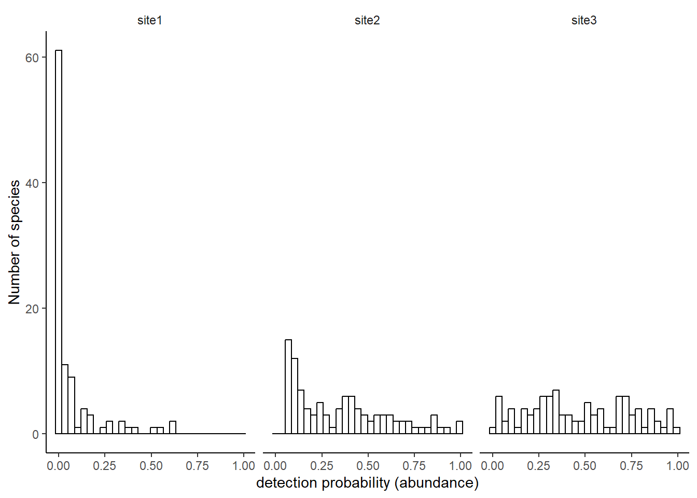
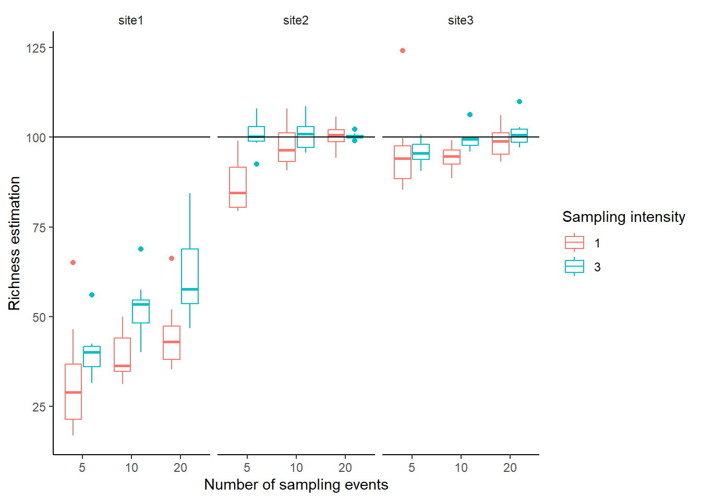

Recently, we have been trying to use rarefaction methods to get comparable esitmate of species richness over time. The data had very heterogeneous sampling pressure over time, so just looking at the species richness was not really an option.
The question came to our mind: what if abundance distribution change over time? is the method working well regardless the species abundance distribution shape?
I struggled a bit to find the answer to my question in the first papers I was looking at. In the appendix F of (Chao et al. 2014) some simulations suggest that the outputs of the rarefaction with Hill numbers might depend on distribution of abundances but nothing shocking. I did not find anything about that in the paper describing the iNEXT R package (Hsieh, Ma, and Chao 2016). So I decided to go for a bunch of simulations.
Let’s imagine 3 different sites, that have exactly the same number of species (n = 100) but different abundance distributions. Here I assume that the probability of detection of each species is directly proportional to abundance and thus I will directly draw detection probabilities.
library(dplyr)library(ggplot2)nbsp=100# a pool of species with a detection probability for eachsp_pool_site1=data.frame(sp=paste0("sp",1:nbsp),prob=exp(-runif(nbsp,0,10)),site="site1")sp_pool_site2=data.frame(sp=paste0("sp",1:nbsp),prob=exp(-runif(nbsp,0,3)),site="site2")sp_pool_site3=data.frame(sp=paste0("sp",1:nbsp),prob=runif(nbsp,0,1),site="site3")sp_pool=rbind(sp_pool_site1,sp_pool_site2,sp_pool_site3) #put all sites togetherpl1=ggplot(data=sp_pool,aes(x=prob))+geom_histogram(fill="white",color="black")+xlab("detection probability (abundance)")+ylab("Number of species")+theme_bw()+theme(axis.line =element_line(colour ="black"),panel.grid.major =element_blank(),panel.grid.minor =element_blank(),panel.background =element_blank(),plot.title=element_text(size=14,face="bold",hjust =0),strip.background=element_rect(fill=NA,color=NA),panel.border=element_blank(),legend.position="none")+facet_wrap(~site)print(pl1)

Then, for each of these three sites I will simulate sampling events. For each sampling event I draw the number of detections for each species in a Binomial distribution, \(B(t,p)\), where \(t\) is the number of trials (a proxy for the sampling intensity) and \(p\) the detection probability of the species. I simulate 10 replicates for different values of sampling intensity and number of sampling events. For each simulations I used the iNEXT R function to estimate the asymptotic richness. Here the code of the simulations, with some dirty nested loops and rbinds.
library(reshape2)library(iNEXT)# a vector of different sampling effortsamp_vec =c(1,3) #sampling intensitysamp_events=c(5,10,20) #number of sampling events# generate the recordsnbrep=10resf=NULLfor(si inunique(sp_pool$site)){ #loop over site pool=subset(sp_pool,site==si)for(ii in samp_vec){ #loop over sampling intensityfor(i in samp_events){ #loop over different number of sampling eventsfor(z in1:i){ # generating sampling eventsfor(j in1:nbrep){ #loop over replicates vec=c(sapply(pool$prob,function(x){rbinom(1,ii,x)})) resf=rbind(resf,data.frame(sp=rep(pool$sp,vec),samp=ii,nbsamp=i,samp_event=z,site=si,trial=j)) } } } }}b=resf %>%group_by(samp,site,trial,sp,nbsamp,samp_event) %>%count(name ="abund") #aggregate data per species, for each site and simulation parametersb$id=paste(b$site,b$trial,b$nbsamp,b$samp,sep=".") #create a unique id for each simulationscomm=split(b, b$id) #creat a list fo community data, one dataframe per simulationscomm=lapply(comm,function(x){dcast(x,id+sp~samp_event,value.var="abund",fill=0)}) #put each data frame in the right format for iNEXT functioncomm=lapply(comm,function(x){x[,-c(1:2)]}) #remove id columnsrari=iNEXT(comm,q=0,size=c(50,100,500,1000),datatype ="incidence_raw")
Once this is done, let’s have a look at the results.
rich_out=subset(rari$AsyEst,Diversity=="Species richness") #extract the predicted richnessrich_out=merge(rich_out,unique(b[,c("id","site","samp","trial","nbsamp")]),by.x="Assemblage",by.y="id") #adding information about parameters of simulations to thatpl2=ggplot(data=rich_out,aes(x=as.factor(nbsamp),y=Estimator,color=as.factor(samp)))+geom_boxplot()+xlab("Number of sampling events")+ylab("Richness estimation")+theme_bw()+theme(axis.line =element_line(colour ="black"),panel.grid.major =element_blank(),panel.grid.minor =element_blank(),panel.background =element_blank(),plot.title=element_text(size=14,face="bold",hjust =0),strip.background=element_rect(fill=NA,color=NA),panel.border=element_blank(),legend.position="right")+labs(color="Sampling intensity")+facet_wrap(~site)+geom_hline(aes(yintercept=nbsp))pl2

The estimated richness depends on the abundance distribution, which is relatively fair, because the site with an exponential distribution of abundances have a significant amount of rare species, that could almost be considered as not present. More problematic, is that the predicted richness depends on sampling pressure. If for uniform distribution (site 3) the method corrected well for sampling effort, it was not the case for more uneven abundance distributions (sites 1 & 2). Abundance distributions appear to be strongly uneven in nature (Callaghan et al. 2023), so this seems to be a real issue.
References
Callaghan, Corey T., Luís Borda-de-Água, Roel van Klink, Roberto Rozzi, and Henrique M. Pereira. 2023. “Unveiling Global Species Abundance Distributions.”Nature Ecology & Evolution 7 (10): 1600–1609. https://doi.org/10.1038/s41559-023-02173-y.
Chao, Anne, Nicholas J. Gotelli, T. C. Hsieh, Elizabeth L. Sander, K. H. Ma, Robert K. Colwell, and Aaron M. Ellison. 2014. “Rarefaction and Extrapolation with Hill Numbers: A Framework for Sampling and Estimation in Species Diversity Studies.”Ecological Monographs 84 (1): 45–67. https://doi.org/10.1890/13-0133.1.
Hsieh, T. C., K. H. Ma, and Anne Chao. 2016. “iNEXT: An R Package for Rarefaction and Extrapolation of Species Diversity (Hill Numbers).” Edited by Greg McInerny. Methods in Ecology and Evolution 7 (12): 1451–56. https://doi.org/10.1111/2041-210x.12613.